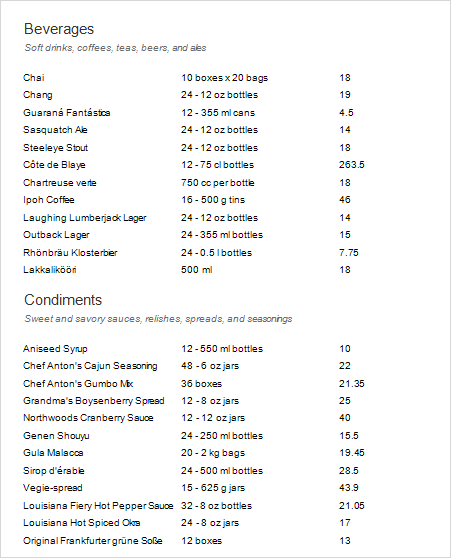
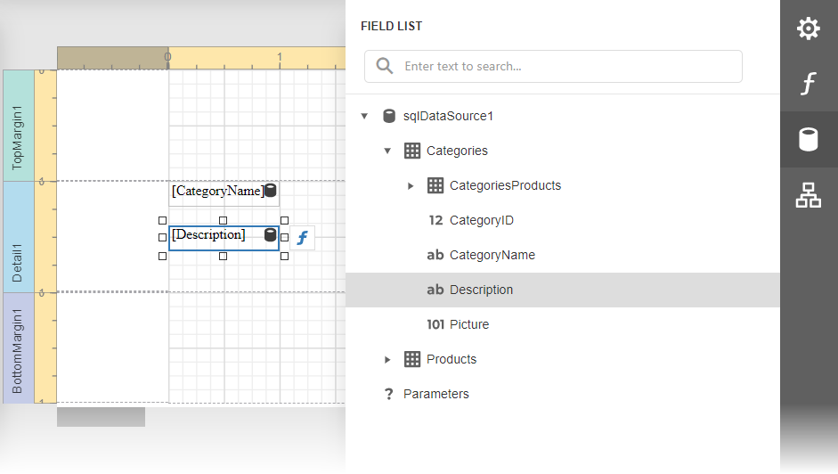
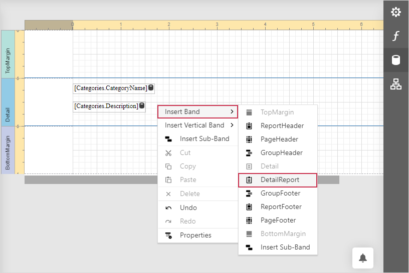
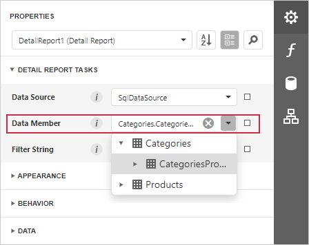
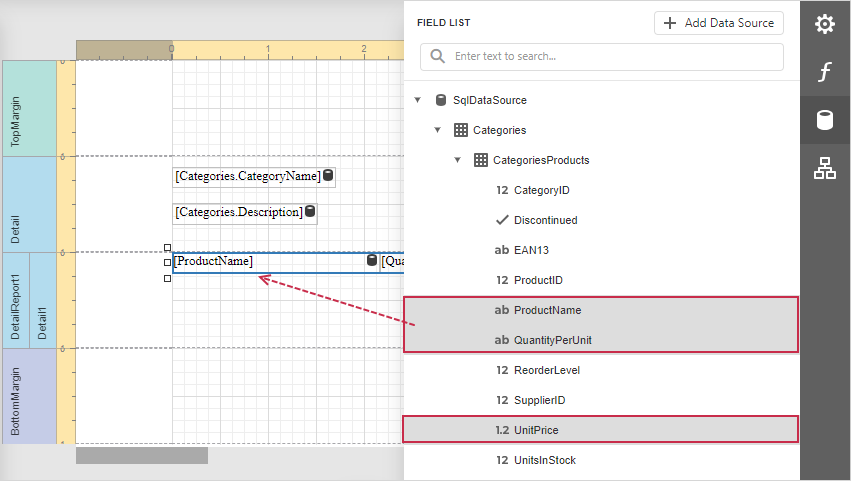

Master-Detail Report with Detail Report Bands
This tutorial illustrates how to display hierarchical data in a master-detail report using nested Detail Report bands. This technique is effective if your data source contains a master-detail relationship. Another technique is described in the following topic: Master-Detail Reports with Subreports).

Bind the report to the required data source and set up a master-detail relationship as described in the Bind a Report to a Database topic.
Drop data fields of the main table from the Field List onto the Detail band.

Right-click the report and select Insert Band→DetailBand to create a Detail Report Band.

Select the Detail Report band and select the master-detail relationship's name in the Data Member property's drop-down list.

Switch to the Field List, select the data fields while holding down CTRL or SHIFT and drag-and-drop them onto the Detail band.

Note
You should drag-and-drop fields from the category corresponding to the master-detail relationship to correctly generate the detail report's data. Otherwise, the report will display only the first record of the detail table as many times as there are records in this table.
Customize the report's appearance and format values.
Switch to Preview to see the resulting report.